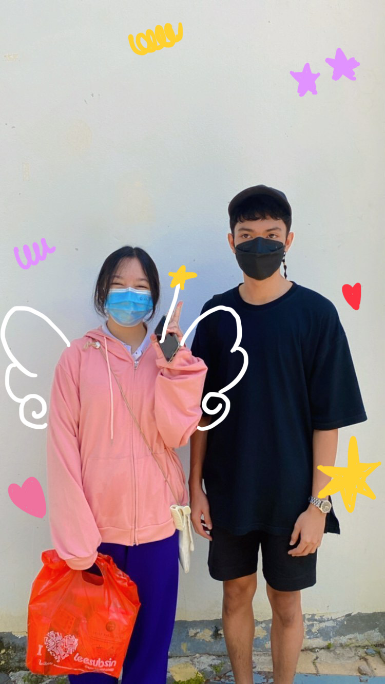
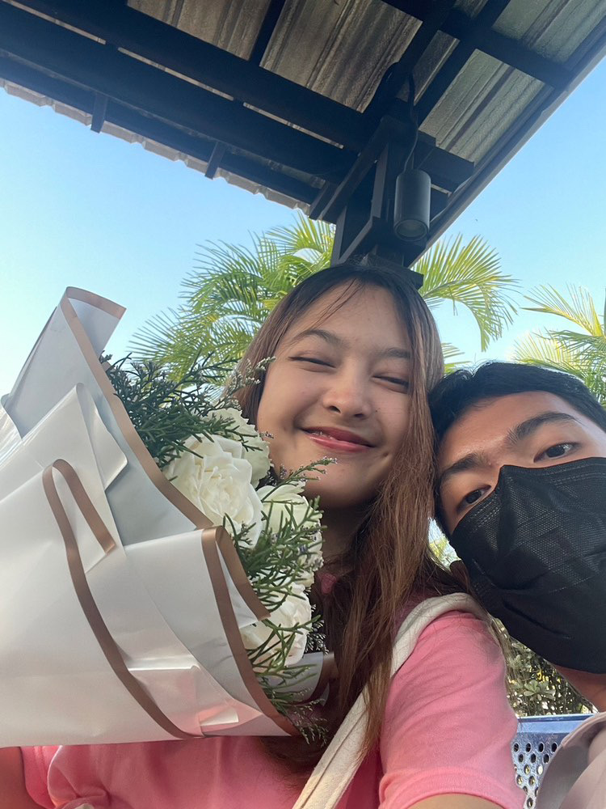
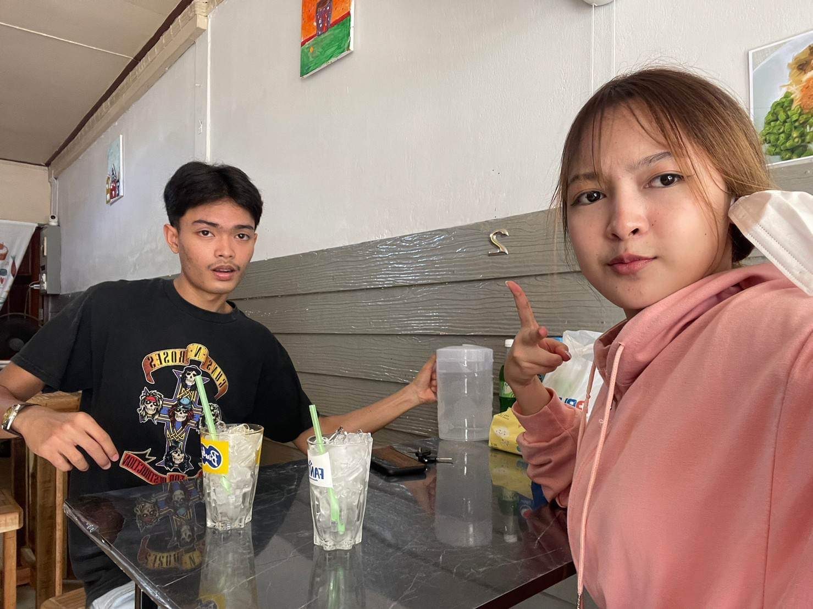
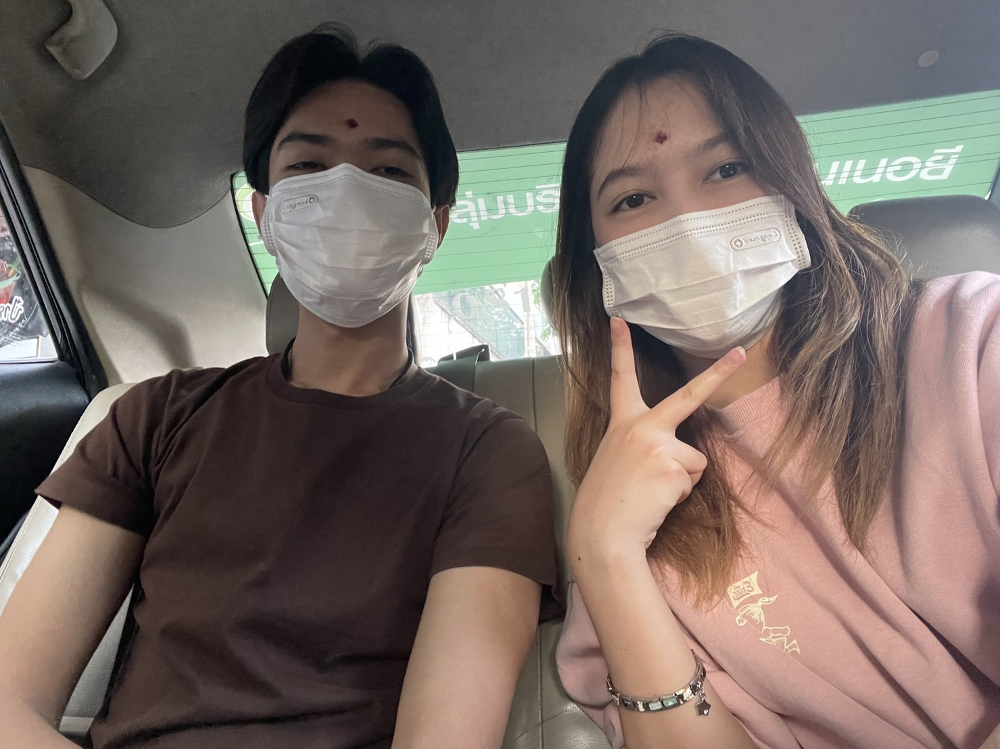

วันเเรกที่เจอกันตัวจริง ตอนนั้นตื่นเต้นทำไรไม่ค่อยถูก
เเต่ไอคิวตัวเล็กมาก นี่ก็เป็นของขวัญชิ้นเเรกที่ให้ด้วย

วาเลนไทน์เซอร์ไพรส์ด้วยดอกกุหลาบขาวช่อใหญ่
หมายถึงรักที่บริสุทธิ์ ตอนนั้นคิดเเค่ว่าเเฟนเราต้องได้ดอกไม้สวยที่สุดในโรงเรียน
ตอนนั้นตอนเดินไปรับไอคิวหน้าโรงเรียนก็มีคนมองเต็มเลย เเต่ก็ถือว่าsuccessละ
เพราะต้องการให้คนอื่นอิจฉา ไอคิวดูดีใจมากพอเห็นดอกไม้ที่ซื้อให้ กอดดอกไม้ตลอดเวลา
กลับบ้านก็ถ่ายรูปมาอวด
ไม่หยุด เเถมไม่ให้ใครยุ่งรวมถึงเค้าด้วย เเละเค้าก็ได้ของขวัญจากไอคิวเหมือนกันคือสร้อยข้อมือ
ตอนนี้ยังเก็บไว้อย่างดี เป็นวาเลนไทน์ที่ดีที่สุดเลยก็ว่าได้

พากันไปทัวร์ร้านต่างๆรอบสงขลาได้ละมั้ง กินมาหมดเเทบจะทุกอย่างละ
เเต่สุดท้ายไม่ว่าจะไปร้านที่อร่อยเเค่ไหน
เเต่สุดท้ายสิ่งที่สำคัญที่สุดไม่ใช่อาหารตรงหน้า เเต่กลับเป็นคนที่นั่งอยู่ตรงข้ามเรามากกว่า
รู้สึกไม่ว่าไปไหนมาไหน
ด้วยกันเค้ากินอะไรก็ได้ เเค่ไปด้วยกันมื้อนั้นก็มีความสุขละ
หลังๆมานี้เค้าก็ยังเหมือนเดิม ชอบให้ไอคิวสั่งข้าวสั่งอาหารให้เพราะเค้าไม่ค่อยกล้าพูด ไอคิวควรอัดเสียงตัวเองไว้ลงspotifyนะ
เวลาไอคิวไม่อยู่เค้าจะได้เปิดให้เเม่ครัวฟัง เวลากินอะไรไอติวมักจะบอกเค้าเสมอ
ให้กินเยอะๆ
เเต่เวลาไปกินข้าวข้างนอกกับเค้าไอคิวกับกินน้อย
เวลาเค้าหิวไอคิวก็คอยดุเค้าตลอดให้กินข้าว
เวลาเค้าไม่อิ่มไอคิวก็ชอบเเบ่งอาหารจากจารตัวเองมาให้เค้า
เวลารู้ว่าเค้าชอบกินอะไรก็จะตักมาให้ตลอด
คอยสั่งข้าวให้เค้าต่อไปนะ

พากันไปทำบุญกันบ่อยมากเป็นคู่รักสายมู เรื่องเรียนไม่ว่า เรื่องเงินมาก่อนเสมอ
ได้ไปเที่ยวดูวันไรต่างๆที่กทมเเล้วเปิดหูเปิดตาสุดๆ เเล้วก็ดีใจมากๆที่ได้ทำบุญร่วมกัน สงสัยชาติที่เเล้วเราสองคน
คงทำบาปไว้เยอะ พระเจ้าเลยให้ไปทำบุญกันบ่อยๆ เเต่ก็ดีละได้เปิดประสบการณ๋ไปนู่นไปนี่ ไปขอพรที่ต่างๆ
สมหวังบ้างผิดหวังบ้างเเต่ก็เรื่องปกติ สำคัญที่คนไปทำบุญด้วยคือใครมากกว่า